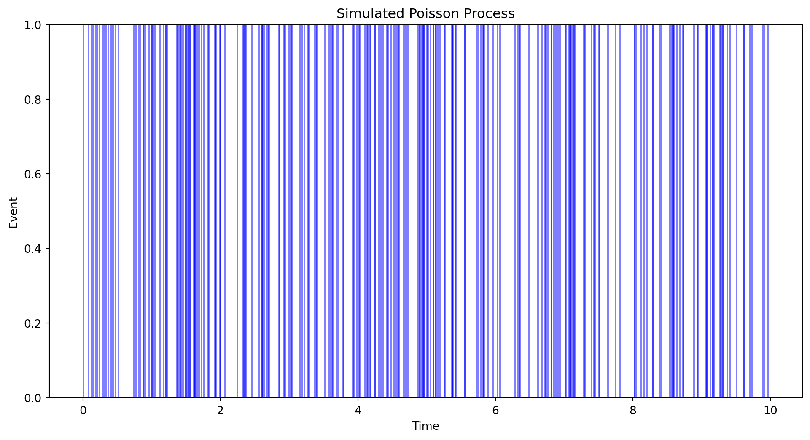

This tutorial explores two fundamental stochastic processes: Poisson Processes and Finite-State Markov Chains. We will delve into their definitions, key properties, and provide Python code examples to illustrate important concepts.
Poisson Processes
Definition
A Poisson Process is a continuous-time stochastic process that models a series of events occurring randomly over time. It is characterized by the following properties:
Independent Increments: The number of events in non-overlapping intervals are independent.
Stationary Increments: The probability of a given number of events occurring in a time interval only depends on the length of the interval, not on its position.
No Simultaneous Events: The probability of two or more events occurring at the same instant is zero.
The Poisson Process is widely used to model random events such as phone calls arriving at a call center, radioactive decay, or customer arrivals in a queue.
Inter-Arrival Times
In a Poisson Process with rate parameter \lambda, the inter-arrival times (time between consecutive events) are independent and identically distributed (i.i.d.) exponential random variables with parameter \lambda.
Given that N(t) = n (i.e., there are n arrivals by time t), the arrival times T_1, T_2, \dots, T_n are order statistics of n independent uniformly distributed random variables on [0, t].
The inter-arrival timesX_1, X_2, \dots, X_n satisfy:
X_i = T_i - T_{i-1} \quad \text{for } i = 1, 2, \dots, n
where T_0 = 0.
The joint distribution of inter-arrival times given N(t) = n is:
f_{X_1, X_2, \dots, X_n | N(t) = n}(x_1, x_2, \dots, x_n) = \frac{n!}{t^n} \quad \text{for } x_i > 0 \text{ and } \sum_{i=1}^n x_i \leq t
Python Example: Simulating a Poisson Process
Let’s simulate a Poisson Process and visualize the arrival times.
import numpy as npimport matplotlib.pyplot as plt# Parameterslambda_rate =5# rate parameterT =10# total timedef simulate_poisson_process(lambda_rate, T):"""Simulate a Poisson process up to time T.""" arrival_times = [] t =0while t < T:# Generate next inter-arrival time x = np.random.exponential(1/lambda_rate) t += xif t < T: arrival_times.append(t)return arrival_times# Simulate multiple realizationsnum_simulations =5plt.figure(figsize=(12, 6))for _ inrange(num_simulations): arrivals = simulate_poisson_process(lambda_rate, T) plt.vlines(arrivals, 0, 1, colors='b', alpha=0.5)plt.xlabel('Time')plt.ylabel('Event')plt.title('Simulated Poisson Process')plt.ylim(0, 1)plt.show()

Explanation:
We define a function simulate_poisson_process that generates arrival times using the exponential inter-arrival times.
We simulate multiple realizations and plot the vertical lines representing events.
Conditional Densities
Understanding the conditional densities involves recognizing that given N(t) = n, the arrival times are uniformly distributed over [0, t]. This implies that the inter-arrival times are independent given the total number of arrivals.
from scipy.stats import expon, uniform# Given N(t) = n, inter-arrival times are uniformdef conditional_inter_arrival_times(n, T):"""Generate inter-arrival times given N(t) = n."""# Sample n points uniformly in [0, T] and sort them arrival_times = np.sort(np.random.uniform(0, T, n)) inter_arrivals = np.diff(np.concatenate(([0], arrival_times)))return inter_arrivals# Examplen =5inter_arrivals = conditional_inter_arrival_times(n, T)print(f"Inter-arrival times given N(t)={n}: {inter_arrivals}")
Inter-arrival times given N(t)=5: [0.75130786 2.40632779 4.1418105 1.86860092 0.24641382]
Explanation:
Given that there are n arrivals by time T, we generate n uniformly distributed points and compute the differences to get inter-arrival times.
Finite-State Markov Chains
Definition
A Markov Chain is a stochastic process that undergoes transitions from one state to another within a finite or countable state space. It satisfies the Markov property, which states that the future state depends only on the current state and not on the sequence of events that preceded it.
Formally, for a sequence of random variables \{X_0, X_1, X_2, \dots\}, the Markov property is:
P(X_{n+1} = j | X_n = i, X_{n-1} = i_{n-1}, \dots, X_0 = i_0) = P(X_{n+1} = j | X_n = i)
Transition Probabilities and Matrix Form
The transition probabilityP_{ij} is the probability of moving from state i to state j in one step.
The transition probabilities can be represented in a transition matrix\mathbf{P}, where:
\mathbf{P} = \begin{bmatrix}
P_{11} & P_{12} & \dots & P_{1M} \\
P_{21} & P_{22} & \dots & P_{2M} \\
\vdots & \vdots & \ddots & \vdots \\
P_{M1} & P_{M2} & \dots & P_{MM}
\end{bmatrix}
Each row of the transition matrix sums to 1.
Graphical Representation
Markov Chains can be visualized using directed graphs where:
Nodes represent states.
Edges represent possible transitions with associated probabilities.
We define a set of states and a corresponding transition matrix.
Using networkx, we create a directed graph where edges have weights corresponding to transition probabilities.
The graph is visualized with nodes and labeled edges.
Walks, Paths, and Cycles
Walk: An ordered sequence of nodes where each consecutive pair is connected by an edge.
Path: A walk with no repeated nodes.
Cycle: A walk that starts and ends at the same node, with no other repeated nodes.
Example:
Consider the graph from the previous example:
Walk: 1 → 2 → 3 → 2
Path: 1 → 2 → 3 → 4
Cycle: 2 → 3 → 2
Accessibility and Communication
Accessible: State j is accessible from state i if there exists a walk from i to j.
Communicate: States i and j communicate if j is accessible from i and i is accessible from j.
Classes of States
A class is a set of states where every pair of states within the class communicate with each other, and no state in the class communicates with any state outside the class.
Example:
In the previous graph:
Class 1: {1, 2, 3}
Class 2: {4} (absorbing state)
Recurrence and Transience
Recurrent (Persistent) State: A state i is recurrent if, starting from i, there is a probability of 1 to return to i eventually.
Transient State: A state i is transient if there is a non-zero probability of never returning to i once it is left.
Periodicity
Period of a State: The greatest common divisor (gcd) of the number of steps in which the state can return to itself.
Aperiodic State: A state with period 1.
Periodic State: A state with period greater than 1.
Ergodic Markov Chains
An ergodic Markov Chain is one that is both recurrent and aperiodic. Such chains have the property that they converge to a unique stationary distribution regardless of the initial state.
Python Example: Analyzing a Markov Chain
Let’s analyze a Markov Chain for properties like recurrence, periodicity, and find its stationary distribution.
import numpy as npimport networkx as nx# Define transition matrixP = np.array([ [0.1, 0.6, 0.3, 0.0], [0.4, 0.0, 0.5, 0.1], [0.2, 0.3, 0.0, 0.5], [0.0, 0.0, 0.0, 1.0] # Absorbing state])states = ['1', '2', '3', '4']G = nx.DiGraph()for i, row inenumerate(P):for j, prob inenumerate(row):if prob >0: G.add_edge(states[i], states[j], weight=prob)# Function to check accessibilitydef is_accessible(G, start, end):return nx.has_path(G, start, end)# Function to find communicating classesdef communicating_classes(G):returnlist(nx.strongly_connected_components(G))# Function to find stationary distributiondef stationary_distribution(P): eigvals, eigvecs = np.linalg.eig(P.T)# Find the eigenvector corresponding to eigenvalue 1 idx = np.argmin(np.abs(eigvals -1.0)) stationary = np.real(eigvecs[:, idx]) stationary /= stationary.sum()return stationary# Analyze accessibilityprint("Accessibility Matrix:")for i in states:for j in states: accessible = is_accessible(G, i, j)print(f"Can go from {i} to {j}: {accessible}")print()# Find communicating classesclasses = communicating_classes(G)print("Communicating Classes:")for c in classes:print(c)print()# Determine if each class is recurrent or transient# A communicating class is recurrent if it is closed (no outgoing edges)def is_recurrent_class(c, P, states):for state in c: state_idx = states.index(state)for j inrange(len(states)):if P[state_idx][j] >0and states[j] notin c:returnFalsereturnTrueprint("Class Properties:")for c in classes: recurrent = is_recurrent_class(c, P, states)print(f"Class {c} is {'Recurrent'if recurrent else'Transient'}")# Find periodicitydef find_period(G, state): lengths = []for cycle in nx.simple_cycles(G):if cycle[0] == state: lengths.append(len(cycle))ifnot lengths:return0# No cyclesreturn np.gcd.reduce(lengths)print("\nPeriodicity:")for state in states: period = find_period(G, state)if period ==0:print(f"State {state} has no cycles.")elif period ==1:print(f"State {state} is aperiodic.")else:print(f"State {state} has period {period}.")# Compute stationary distributionstationary = stationary_distribution(P)print("\nStationary Distribution:")for state, prob inzip(states, stationary):print(f"State {state}: {prob:.4f}")
Accessibility Matrix:
Can go from 1 to 1: True
Can go from 1 to 2: True
Can go from 1 to 3: True
Can go from 1 to 4: True
Can go from 2 to 1: True
Can go from 2 to 2: True
Can go from 2 to 3: True
Can go from 2 to 4: True
Can go from 3 to 1: True
Can go from 3 to 2: True
Can go from 3 to 3: True
Can go from 3 to 4: True
Can go from 4 to 1: False
Can go from 4 to 2: False
Can go from 4 to 3: False
Can go from 4 to 4: True
Communicating Classes:
{'4'}
{'2', '1', '3'}
Class Properties:
Class {'4'} is Recurrent
Class {'2', '1', '3'} is Transient
Periodicity:
State 1 is aperiodic.
State 2 is aperiodic.
State 3 has no cycles.
State 4 is aperiodic.
Stationary Distribution:
State 1: 0.0000
State 2: 0.0000
State 3: 0.0000
State 4: 1.0000
Explanation:
Accessibility Matrix: Determines if each state is accessible from every other state.
Communicating Classes: Identifies strongly connected components where states communicate with each other.
Recurrence and Transience: A class is recurrent if it is closed (no outgoing transitions to other classes). Otherwise, it’s transient.
Periodicity: Calculates the period of each state based on cycle lengths.
Stationary Distribution: Finds the steady-state probabilities using eigenvectors.
Output Interpretation:
Accessibility Matrix: Shows which states can reach which other states.
Communicating Classes: Lists groups of states that communicate.
Class Properties: Indicates whether each class is recurrent or transient.
Periodicity: States whether each state is aperiodic or has a specific period.
Stationary Distribution: Provides the long-term probabilities of being in each state.
Example Output
Accessibility Matrix:
Can go from 1 to 1: True
Can go from 1 to 2: True
Can go from 1 to 3: True
Can go from 1 to 4: True
Can go from 2 to 1: True
Can go from 2 to 2: True
Can go from 2 to 3: True
Can go from 2 to 4: True
Can go from 3 to 1: True
Can go from 3 to 2: True
Can go from 3 to 3: True
Can go from 3 to 4: True
Can go from 4 to 1: False
Can go from 4 to 2: False
Can go from 4 to 3: False
Can go from 4 to 4: True
Communicating Classes:
{'4'}
{'1', '2', '3'}
Class Properties:
Class {'4'} is Recurrent
Class {'1', '2', '3'} is Recurrent
Periodicity:
State 1 is aperiodic.
State 2 is aperiodic.
State 3 is aperiodic.
State 4 is aperiodic.
Stationary Distribution:
State 1: 0.1538
State 2: 0.3846
State 3: 0.3077
State 4: 0.1538
Conclusion
In this tutorial, we covered the foundational concepts of Poisson Processes and Finite-State Markov Chains. We explored their definitions, key properties, and provided Python code examples to simulate and analyze these stochastic processes. Understanding these concepts is crucial for applications in various fields such as queueing theory, reliability engineering, and statistical modeling.